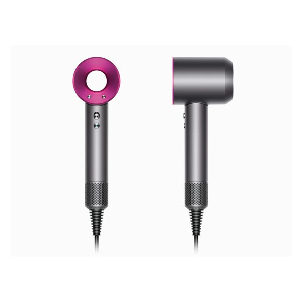
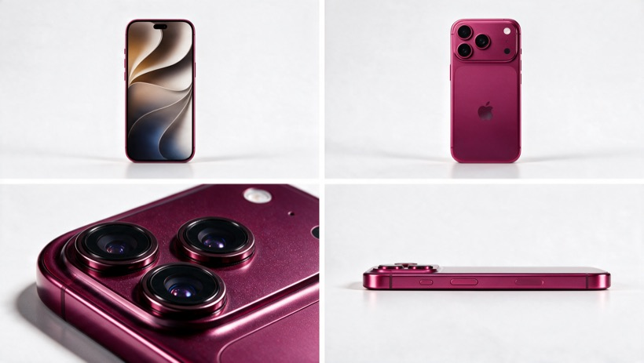
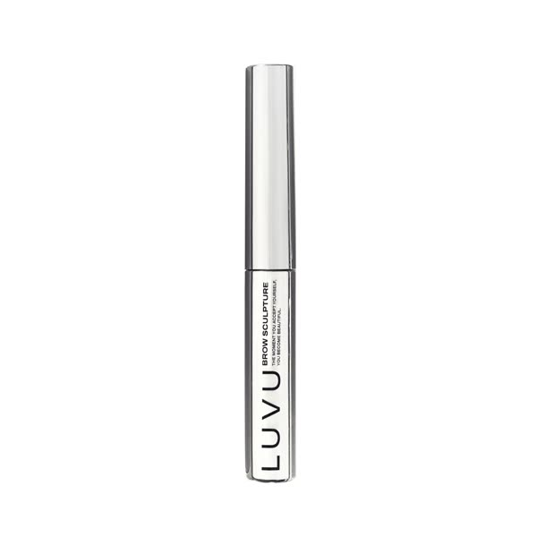

Великан
с сумкой
Героиня ростом 40 метров аккуратно переходит дорогу у дворца, перешагивая машины. Сумка не застёгнута — и из неё один за другим вываливаются три товара размером с дом. Камера лежит прямо на брусчатке. Двенадцать секунд одним кадром, 9:16. Промпт универсальный — заполняются только четыре описания в квадратных скобках.




Как заполнить промпт
В начале промпта четыре строки [describe: …]. Замени их описаниями на английском — всё остальное работает как есть. Ниже примеры для товаров из роликов.
Промпт
Копируешь целиком, заменяешь четыре поля в квадратных скобках — и в Syntx.
FOUR REFERENCE IMAGES. EACH DEFINES ONE SUBJECT. @image1 = THE HERO PRODUCT. [describe: shape, colour, material, finish, logo placement, approximate real-life size in centimetres] @image2 = THE SECOND PRODUCT. [describe: shape, colour, material, finish, logo placement, approximate real-life size in centimetres] @image3 = THE THIRD PRODUCT. [describe: shape, colour, material, finish, logo placement, approximate real-life size in centimetres] @image4 = THE WOMAN. [describe: skin, freckles or marks, eyebrows, eye colour, hairstyle, then the full wardrobe from top to bottom] From this point on, THE HERO PRODUCT, THE SECOND PRODUCT, THE THIRD PRODUCT and THE WOMAN always mean exactly these four subjects. Use each reference exclusively for the identity of its own subject: recognizable shape, proportions, colors, materials, surface details, branding, logo, typography, face, hair and wardrobe. Ignore the white studio backgrounds of all four references completely. Do not reproduce their studio environments, reference lighting, shadows, compositions or camera angles. The three products are three DIFFERENT objects. Never merge, swap or cross-brand them. Never place branding, lettering or colour from one onto another. EXACTLY THREE OBJECTS FALL IN THIS FILM: THE HERO PRODUCT, THE SECOND PRODUCT and THE THIRD PRODUCT. Nothing else ever falls from the bag or into frame. No extra shoes, boots, bags, accessories, clothing or unbranded props of any kind. THE WOMAN remains the exact same recognizable person in the exact same wardrobe throughout. Do not invent additional clothing or accessories beyond the shoulder bag described below. She carries ONE large structured shoulder bag on a strap over one shoulder, in a material consistent with her wardrobe, scaled to her — it is the size of a shipping container relative to the square. The bag has a fold-over flap closure. The flap is NOT fastened, and this is visible from her first appearance: it lifts slightly as she moves. This is the physical cause of everything that falls. CREATE ONE 12-SECOND EXTREMELY PHOTOREALISTIC CINEMATIC FILM SEQUENCE. VERTICAL 9:16 FORMAT. ONE CONTINUOUS SHOT. NO CUTS. THE CAMERA NEVER MOVES. The references control identity only. Everything else is controlled by this screenplay: environment, camera, scale, falling objects, landing behaviour, lighting, acting, timing and physics. THE PACE OF THIS FILM IS SLOW. In twelve seconds she takes only TWO steps — but those two steps carry her all the way across the road. She is walking, slowly, with enormous mass. She is not standing still and she is not marching in place. GIANT SCALE — HIGHEST PRIORITY THE WOMAN is enormous. She stands approximately 40 metres tall. Her head and shoulders rise well above the roofline of the palace behind her, and her knee is level with its upper windows. She is a genuine giant in this world, not an optical illusion and not a trick of the lens. Her body proportions are entirely normal and human — she is simply vast. SCALE IS ESTABLISHED BY NEIGHBOURS, NOT BY THE CHARACTER. Ordinary reference objects must remain visible in frame at all times: the moving traffic on the road, the palace facade with its individual windows, the paving slabs, and small human pedestrians far in the background. Without them the scale collapses. SHE MOVES SLOWLY. Great mass means great inertia. Every movement takes noticeably longer than the same movement would take an ordinary person: slow acceleration, slow deceleration, long settling of the limbs, visible follow-through in her hair and clothing after the body has stopped. Never let her move at ordinary human speed. That single mistake instantly reads her as a normal-sized person. Her weight is felt by the world: a low tremor travels through the square with each footfall, loose grit on the paving jumps, and fine dust lifts where her feet land. HER SCALE NEVER CHANGES. She does not shrink or grow between beats or between frames. THE PRODUCTS ARE COLOSSAL The falling objects are scaled to HER, not to the city. On this street they are architecture, not merchandise. ABSOLUTE SIZE: once landed, THE HERO PRODUCT is roughly the size of a two-storey building — about the length of a city bus and as tall as the first two floors of the palace behind it. The other two products are correspondingly vast. FRAMING SIZE — THE RELIABLE TEST: because it lands closest to the lens on an ultra-wide, THE HERO PRODUCT must fill AT LEAST TWO THIRDS OF THE FRAME WIDTH and reach roughly HALF THE FRAME HEIGHT once it settles. It dominates the composition completely. THE WOMAN, the road and the palace are all visible ABOVE and AROUND it, small by comparison. If the product looks like an ordinary object lying on a pavement, the shot has failed. THE SECOND and THIRD PRODUCTS land further from the lens and are therefore smaller in frame, but each still spans a significant portion of the frame width and stands taller than the vehicles on the road behind them. THE COMPARISON MUST BE IN THE FRAME: at least once, a car passes along the road directly behind a landed product, and the car is TINY against it — a fraction of its height, a small moving shape beside a wall of packaging. This is a faithful proportional scale-up of each object, never a redesign. Every proportion, ratio, material, logo and letterform stays exactly as in its reference — simply seen at a size where the street reads it as monumental. Do not simplify, thicken, stretch or "adapt" any packaging for the larger size. Do not invent additional seams, panels, detail or text that would only exist on a large object. At this size the real material must be visible in full: the actual surface finish rendered across metres, the actual print quality, the actual texture and grain of the packaging or leather. THE CAMERA PLACE THE CAMERA PHYSICALLY ON THE GROUND. The lens sits directly on the stone paving, a few centimetres above the surface, tilted slightly upward. Use an ULTRA-WIDE perspective approximately equivalent to a 14mm spherical lens, with the mild natural barrel distortion such a lens produces: straight lines bowing gently at the frame edges, enormous exaggerated depth between foreground and background. The camera is ABSOLUTELY LOCKED OFF for the entire film. It never pans, tilts, pushes, rises or drifts. Not one frame of camera movement. FRAME STRUCTURE — four depth planes that never change: FOREGROUND, bottom edge: the stone paving surface itself, rendered huge and out of focus — individual grit, small pebbles, the mortar lines between slabs. NEAR MIDGROUND, centre and filling most of the frame once the first product lands: the patch of paving in front of the lens where the products land. Everything that falls lands HERE, and the landed objects become the dominant mass of the composition, towering in the lower two thirds of the frame. FAR MIDGROUND: the road, crossing the frame horizontally, BEYOND the landing zone so passing vehicles never block the landed products. This is where she walks. BACKGROUND, upper half: the palace and the sky. CINEMATIC WORLD A large open public square in a northern European capital on a bright day. Behind THE WOMAN stands a grand pale stone baroque palace facade: a tall arched gateway at its centre, ornamental sculpture along its roofline, rows of tall windows, a stone balustrade running along the front. The square is paved in large irregular grey stone slabs with visible mortar joints, scattered grit and small pebbles. THE ROAD: A normal city road runs across the square in the FAR MIDGROUND, between the landing zone and the palace, crossing the frame horizontally from one edge to the other. It is wide enough that crossing it takes her two full strides. Ordinary traffic uses it throughout the film at ordinary speed: several cars, a delivery van, a city bus, spaced irregularly as real traffic is. The vehicles are completely normal in size. They are the primary measure of everything else in the frame. The traffic never stops, never swerves, never crashes and never reacts to her. The drivers do not look up. Their obliviousness is deliberate and is what makes the scale read as ordinary rather than as a disaster. A few ordinary pedestrians are visible far in the background, tiny against her. They never react either. The sky fills the upper part of the frame: deep saturated blue with large bright cumulus clouds, high contrast, strong definition in the cloud edges. Everything is real, lived-in and unremarkable. This is a real city square, not a clean render. LIGHTING AND FILM LANGUAGE Bright daylight, high sun on a clear day. Hard sunlight from behind and above the camera rakes across the paving, picking out the texture of the stone. Because the landed objects are the size of buildings, each casts a vast architectural shadow that falls across the paving, across the road and over the passing vehicles, darkening them as they drive through it. THE WOMAN casts a genuine enormous shadow that sweeps across the square, the road and the traffic as she moves. The shadow travels with her as she advances, which is one more proof that she is covering ground. The palace facade is bright and holds full highlight detail. The sky retains full cloud structure and never blows out to white. The products are the most saturated masses in the frame and separate hard from the neutral grey stone. Use natural daylight only. The look is HIGH-SATURATION CONTEMPORARY FASHION FILM: deep punchy colour, rich saturated blues in the sky, strong colour separation between the products and the grey stone, crisp contrast, clean digital capture with a slight filmic grade, natural skin tones, deep but detailed shadows, fine subtle grain, sharp foreground micro-texture, realistic optical depth from the ultra-wide lens, and natural 24fps motion blur. The image must feel genuinely photographed on a real camera lying on a real street. No dreamy haze. No washed-out pastel grade. No artificial HDR. No plastic skin. No videogame, CGI monster-movie or kaiju look. THE FALLING OBJECTS — FULLY REALISTIC PHYSICS Nothing falls out of the empty sky. Each of the three products is TIPPED OUT of her open shoulder bag by the movement of the bag itself. THE GRAMMAR OF THE SPILL — IMPORTANT: The bag is the active thing. The products are entirely passive. They have no momentum of their own and never propel themselves. Show the causal chain: HER TORSO ROTATES AS SHE SHIFTS HER WEIGHT → THE BAG SWINGS ON ITS STRAP AND TURNS PAST HORIZONTAL → THE UNFASTENED FLAP FALLS OPEN UNDER ITS OWN WEIGHT → THE CONTENTS INSIDE SHIFT AND SLUMP TOWARD THE OPENING → GRAVITY TAKES THEM OVER THE LIP → THEY SIMPLY FALL. At the moment of release the product is barely moving. It emerges slowly, tipping over the edge of the opening the way something slides off a tilted shelf, and only then begins to accelerate downward under gravity alone. It must never be ejected, launched, flung, shot out, thrown or pushed. It never leaves the bag faster than the bag itself is moving. There is no outward or upward velocity at the moment of release — only the slow topple over the lip and then the fall. The first fraction of the fall is slow. The speed comes from the height, not from the exit. She does not notice. Her attention stays on the road at her feet. She never looks at the bag, never checks it, never opens or shakes it on purpose. THE FALL: The objects leave the bag from her shoulder height — an enormous distance relative to the street — and fall the entire way to the ground. Each fall is completely physically real: correct gravitational acceleration from a near standstill, correct increasing speed, correct motion blur, correct tumbling rotation from air resistance. Denser objects tumble less; lighter and flatter ones tumble more. Because these are building-sized masses falling from that height, they arrive with tremendous speed and momentum, and they grow enormously in frame as they approach the lens. THE LANDING — FULLY REALISTIC, NO STYLIZATION: Each object hits the stone hard and behaves exactly as that real object would at that mass and speed. It does NOT come to rest standing upright. It does NOT arrive in a display pose. On impact: a colossal heavy strike, a great burst of dust and grit thrown outward across the paving, a genuine bounce or skid, one or two secondary impacts, a long slide across the stone, and then it comes to rest wherever the physics leaves it — on its side, at an angle, rocking to a stop, however it actually falls. Rigid objects strike hard and bounce or skid. Soft objects hit with a dull heavy impact, deform on contact, recover their shape and settle without bouncing. Objects with straps or cords whip on impact and trail loose across the stone. Each landing sends a visible shockwave of dust rolling outward past the lens. BRANDING VISIBILITY, IN SPITE OF REALISM: Although the landings are uncontrolled, each of the three products happens to come to rest with its branded face turned toward the lens and readable. This is the one piece of luck in an otherwise fully physical sequence. Nothing is ever damaged. No scuffs, no dents, no tears, no scratches. The stone beneath is not cracked. Once an object has settled it STAYS exactly where it settled, in frame, for the rest of the film. Nothing vanishes and nothing moves again. ACTING DIRECTION THE WOMAN behaves like a real human being who simply happens to be enormous. She is not a monster and not a spectacle. She is a composed woman crossing a busy road, concentrating on where she puts her feet. She never roars, never stomps deliberately, never threatens, never performs power, never acknowledges the camera, never poses. All acting is restrained, psychologically motivated and physically believable. THOUGHT PRECEDES ACTION. CAUSE PRECEDES EFFECT. EYES REACT FIRST → TINY PROCESSING PAUSE → HEAD FOLLOWS → TINY PAUSE → BODY FOLLOWS. At her scale each of these pauses lasts longer. HER CENTRAL BEHAVIOUR — CROSSING THE ROAD: Her whole attention is on the traffic beneath her. She is careful the way a person is careful stepping through a room of sleeping animals: she does not want to hurt anything. Her head stays angled DOWNWARD toward the road for most of the film, her eyes scanning the moving vehicles. Before each step she looks left along the road, then right, checking what is coming. Her head turns slowly and deliberately between the two directions. THE ANATOMY OF ONE STEP — this is the core action: WEIGHT SHIFTS onto the standing leg → THE OTHER FOOT LIFTS high, the knee rising, the sole clearing a vehicle's roof → A BRIEF HOLD while the vehicle passes underneath — one beat only, not a long pause → THE FOOT TRAVELS FORWARD THROUGH THE AIR, moving a genuine distance across the road, not merely up and down → IT COMES DOWN DECISIVELY on the empty asphalt ahead, in one committed movement with the weight behind it → CONTACT, firm and heavy: a tremor through the road, a burst of dust outward, nearby vehicles rocking on their suspension → THE WEIGHT TRANSFERS FULLY FORWARD onto the new leg. The hips move forward over the foot. The trailing leg leaves the ground behind her and follows → HER WHOLE BODY HAS ADVANCED. Her hair and clothing settle a moment after she stops. CRITICAL: EACH STEP CARRIES HER FORWARD ACROSS THE GROUND. This is walking, slowly — not marching in place and not standing still while lifting a leg. Her position in the frame must visibly change between steps. She starts the film on the near side of the road and finishes it on the far side, clearly closer to the palace, having covered real distance. THE RHYTHM OF THE STEP: the lift is slow and careful, the hold is one beat, and then the DESCENT AND PLANTING ARE NOTICEABLY QUICKER. Once she has decided where the foot goes, it goes. The foot travels forward and lands firmly in one movement, without hovering or drifting down. It is the deliberation that is slow, not the execution. A person crossing a busy road takes a long time deciding and then moves decisively. She completes TWO such steps in the film. No more. The slowness lives in the pauses between steps, not in the planting. She never crushes, kicks or touches a single vehicle. The care is deliberate and readable throughout. She never flinches at the objects falling from her bag and never looks up at the sky. Natural breathing. Natural weight transfer. Natural body inertia. Correct human anatomy and joint articulation. No exaggerated expressions. No theatrical gestures. No comic wobbling. 0.0–1.6s — OPENING Begin with the locked-off ground-level composition. THE WOMAN stands in the far midground at the NEAR EDGE of the road, towering far above the palace behind her, the open-flapped bag at her side. The paving in front of the lens is completely empty. Traffic moves normally along the road at her feet. A car crosses the frame beneath her. Her head is angled down. She looks LEFT along the road, then slowly RIGHT, judging the traffic before she moves. A low tremor travels through the square as she shifts her weight. Hold this beat so the geometry registers: the huge empty stone foreground, the ordinary traffic, her vast figure against the clouds, the palace tiny beneath her. 1.6–5.4s — THE FIRST STEP, AND THE HERO PRODUCT FALLS Her weight shifts onto one leg. The other foot lifts high, the knee rising, the sole clearing the roof of a delivery van approaching beneath her. One beat of hold as the van passes underneath. As her torso rotates with the raised leg, the bag swings forward on its strap and turns past horizontal. The unfastened flap falls open under its own weight. Inside, the contents shift toward the opening. THE HERO PRODUCT slumps over the lip and tips out, barely moving as it leaves. Then gravity takes it. It falls the full height of the frame, accelerating from almost nothing, tumbling, growing enormously as it nears the ground until it fills the width of the frame. It strikes the paving in the NEAR MIDGROUND closest to camera with a colossal impact, throwing a great shockwave of dust and grit rolling outward past the lens, bounces heavily once, skids across the stone and rocks to a stop on its side at an angle — but with its branded face turned toward the lens and fully readable. A car passes along the road directly behind it as it settles, driving on without slowing. The car is tiny against it — a small moving shape at the foot of a wall of packaging, a fraction of its height. THE HERO PRODUCT now fills at least two thirds of the frame width and reaches roughly half the frame height. It is the dominant mass of the composition. THE WOMAN, the road and the palace are visible above and around it, small by comparison. Show its real material across that scale: the surface finish rendered over metres, the print quality, the texture and grain. It holds this position for the remainder of the film, and its shadow falls across the road behind it. Meanwhile her raised foot travels forward through the air and comes down decisively on the empty asphalt on the far side — one committed movement, the weight behind it, landing firmly. The road trembles, dust bursts outward, the nearest cars rock on their suspension. Her hips move forward over the planted foot. Her trailing leg leaves the ground behind her and follows. Her whole body has advanced across the frame. Her hair settles a moment after she stops. She has not noticed the spill. Her eyes are on the traffic. 5.4–9.0s — THE SECOND STEP, AND THE OTHER TWO FALL She straightens and looks LEFT along the road, then slowly RIGHT, judging the next gap. Her weight shifts onto the other leg. Her second foot lifts high and holds one beat while a city bus passes beneath it. The bag swings forward again and the open flap tips a second time. THE SECOND PRODUCT slumps over the lip and tips out with no momentum of its own, then falls the full height, strikes the stone BEHIND and to one side of the hero product with a heavy impact and its own burst of dust, bounces, slides and settles at its own uncontrolled angle — branded face toward the lens, standing taller than the vehicles on the road behind it. A moment later THE THIRD PRODUCT tips out of the same opening the same way, falls, hits the paving on the other side, deforms or bounces according to its real material, and comes to rest — branded face toward the lens, equally vast. All three products are now on the ground, clearly separated, none overlapping, all readable, together filling the lower two thirds of the composition. Traffic continues to pass behind them, tiny by comparison, driving through their shadows. Meanwhile her raised foot travels forward across the remaining width of the road and comes down decisively behind the bus, landing firmly in one committed movement. Tremor, dust, vehicles rocking. Her hips move forward over it. The trailing leg follows. She has now fully crossed the road and stands clearly closer to the palace than when the film began. She still has not noticed. Her eyeline stays on the asphalt. 9.0–12.0s — SHE NOTICES AND REACHES Now settled on both feet on the far side, she finally catches the movement below. Her EYES react first. Tiny processing pause. Her head turns down toward the three vast objects lying on the paving. Tiny pause. She glances sideways at her own open bag, and understands. She lowers herself toward them in one slow weighted movement — the knees bending, the back staying straight, one hand going down toward the stone for balance. The descent takes real time and carries real mass. Because of the ultra-wide lens and her closeness, that hand comes near the camera and is rendered enormous and distorted at the frame edge — and even at her scale, the products beneath it are large enough that her palm would not cover one. She settles into the crouch. Her hair swings forward and settles a moment after her body has stopped. She extends one finger toward THE HERO PRODUCT with care — but she does not touch it and does not pick anything up. The finger stops just short. HOLD this suspended beat: her enormous hand above the product, the branded face readable beneath it, the traffic still crossing behind her. Behind her, a bus passes along the road, tiny against her forearm. END here, with her finger still hovering short of the product. The three products lie untouched in the foreground, branded faces toward camera, filling the lower two thirds of the frame, with ordinary traffic still crossing the road behind. Do not resolve the scene. Do not have her pick anything up. Do not cut to a product packshot. Do not add text. FINAL PRIORITIES PRIORITY 1 — THE PRODUCTS ARE COLOSSAL. Once landed, THE HERO PRODUCT fills at least two thirds of the frame width and half the frame height, roughly the size of a two-storey building. The other two products are correspondingly vast and stand taller than the vehicles behind them. Passing cars are tiny against them. If any product reads as an ordinary-sized object on a pavement, the shot has failed. PRIORITY 2 — GIANT SCALE, STABLE. She is approximately 40 metres tall in every frame and never shrinks toward normal size. Scale anchors — traffic, palace windows, paving slabs, distant pedestrians — stay visible throughout. PRIORITY 3 — TWO STEPS THAT COVER REAL DISTANCE. She takes exactly two steps in twelve seconds, and each one carries her forward across the ground. Her position in frame visibly changes: she begins on the near side of the road and ends on the far side, clearly closer to the palace. She never marches in place and never stays in the same spot. PRIORITY 4 — THE STEP RHYTHM. The lift is slow and the hold is one beat, but the descent and planting are quick and committed. The foot never hovers, drifts or floats down. It lands firmly with the weight behind it. PRIORITY 5 — THE BAG TIPS THEM OUT. The bag is active, the products are passive. Each product slumps over the lip of the open flap with almost no velocity and then falls under gravity alone. Nothing is ever ejected, launched, flung or propelled out of the bag. PRIORITY 6 — SHE LOOKS DOWN AND CHECKS. Head angled down throughout, looking left then right along the road before each step. She never crushes, kicks or touches a vehicle. PRIORITY 7 — EXACTLY THREE FALLING OBJECTS. Only the three branded products fall. No shoes, boots, accessories or unbranded props of any kind ever appear. PRIORITY 8 — FULLY REALISTIC FALLING AND LANDING. Real gravitational acceleration from a near standstill, colossal impact, real bounce, skid, deformation and settling, with great shockwaves of dust. Objects come to rest at uncontrolled angles, on their sides, wherever the physics leaves them. Nothing lands standing upright or in a display pose. PRIORITY 9 — BRANDED FACES READABLE. Despite the uncontrolled landings, each of the three products happens to settle with its branded face toward the lens and readable. PRIORITY 10 — FAITHFUL SCALE-UP. The products are proportional enlargements with every proportion, material, logo and letterform identical to their references. Nothing redesigned, simplified or invented for the larger size. PRIORITY 11 — THE CAMERA IS ON THE GROUND AND NEVER MOVES. Lens resting on the paving, ultra-wide, locked off for all twelve seconds. Zero camera movement in any frame. PRIORITY 12 — PERSISTENCE. Landed objects stay exactly where they settled, in frame, to the final frame. Nothing vanishes, nothing moves twice, nothing is collected or touched. PRIORITY 13 — PRODUCT IDENTITIES. Three different branded objects, each matching its own reference exactly, spaced apart, never overlapping, never cross-branded. PRIORITY 14 — SLOW GIANT MOVEMENT AND AN OBLIVIOUS WORLD. All her motion carries great mass. She never roars, stomps deliberately, poses or acknowledges the camera. Traffic and pedestrians never react. PRIORITY 15 — CONTINUOUS SINGLE SHOT. No cuts, no transitions, no scene changes. MANDATORY STORY CONTINUITY: empty stone foreground, ordinary traffic crossing the road, she stands at the near edge of the road towering above the palace with her bag flap open → head down, she looks left along the road, then right → weight shifts, one foot lifts high, clearing a van's roof, one beat of hold as it passes → her torso rotates, the bag swings and turns past horizontal, the flap falls open under its own weight → the hero product slumps over the lip and tips out with almost no velocity → gravity takes it, it accelerates from nothing, tumbling and growing enormously the full height of the frame → it strikes the stone with a colossal impact, throws a shockwave of dust past the lens, bounces, skids and rocks to a stop on its side, branded face toward the lens, filling two thirds of the frame width → a car passes behind it and is tiny against it → her foot travels forward and comes down decisively on the far side, landing firmly, tremor and dust → her hips move forward, the trailing leg follows, her whole body has advanced → she looks left and right again → weight shifts, the second foot lifts high and holds one beat while a bus passes beneath → the bag tips again, the second and third products slump over the lip and fall, impact, bounce and settle at their own uncontrolled angles, branded faces toward the lens, each taller than the vehicles behind → her foot travels forward and lands firmly behind the bus, hips forward, trailing leg follows → she has fully crossed the road and stands closer to the palace → she finally notices, eyes first, then head, then a glance at her open bag → she lowers herself into a slow crouch, knees bending, one hand reaching down, enormous at the frame edge → her hair settles after her body → she extends one careful finger toward the hero product and stops just short of touching it → hold → a bus passes behind her, tiny against her forearm → end with the finger still hovering. FINAL IMAGE AND MOTION QUALITY: Extremely photorealistic. Contemporary high-saturation fashion film photography. Natural human walking at giant scale, with real forward locomotion. Realistic anatomy. Correct hands and fingers, including at the distorted frame edge. Realistic body inertia and mass. Realistic single-leg balance. Fully physical falling, impact, bounce and settling behaviour at architectural scale. Realistic vehicle behaviour. Correct ultra-wide lens distortion. Crisp foreground micro-texture in the stone. Natural motion blur. Stable character identity. Stable product identities. Stable scale. Stable exposure. Consistent grain. No temporal flicker. No camera jumps. No robotic movement. No synthetic AI-video appearance. 4K, Ultra HD, rich details, sharp clarity, natural colors, stable picture. NEGATIVE / DO NOT: the products rendered at ordinary real-life size; the products rendered merely car-sized or smaller; the hero product occupying less than two thirds of the frame width once landed; the products reading as normal merchandise lying on a pavement; cars appearing comparable in size to a landed product; products being ejected, launched, flung, shot out, thrown or pushed from the bag; products leaving the bag with their own momentum, sideways or upward velocity; products popping out as if spring-loaded; the foot hovering, hesitating or drifting downward slowly on the descent; the foot planting weakly or without impact; the woman marching in place; the woman lifting a leg without then moving forward on it; the woman remaining in the same position in frame for the whole film; her foot returning to the spot it lifted from; no visible change in her distance from the palace between the first and last frame; the woman taking more than two steps; the woman walking at a normal cadence or hurrying; her finger making contact with any product; her touching, nudging or moving anything; any object other than the three branded products falling or appearing in frame; shoes, boots, accessories, clothing or unbranded props falling from the bag; objects landing standing upright, in a display pose or as though placed; objects floating, drifting or falling in slow motion; objects landing without impact, dust, bounce or skid; the woman shrinking to normal human size in any frame; the woman moving at ordinary human speed; the woman stepping on, crushing, kicking or touching any vehicle; the woman walking straight ahead without looking down or checking the road; the frame losing its scale anchors so that no traffic, palace windows or paving slabs remain visible; the road empty of traffic; traffic stopping, swerving, crashing or reacting to her; vehicles scaled wrongly so they read as toys or as full-size relative to her; vehicles driving in front of the landed products and obscuring them; the products redesigned, simplified or given invented detail at large scale; altered logo, invented text or changed proportions; objects falling from an empty sky with no visible source; the bag bursting, tearing or being deliberately opened; her noticing the spill before she has crossed the road; her picking anything up; any product landing face-down so its branding is unreadable; a monster-movie or kaiju aesthetic; the woman roaring, snarling, stomping deliberately or acknowledging the camera; any camera movement, pan, tilt, push or drift; the camera lifting off the ground; the paving cracking or breaking; products overlapping or touching each other; branding or lettering from one product appearing on another; the sky blowing out to flat white; any cut or transition; a static product packshot ending; on-screen text, captions or logos.
На что смотреть
Под ролик хорошо ложится спокойный городской фон и низкий глухой удар на каждом шаге и приземлении товара: на ~3.5, ~5, ~7 и ~8.5 секунде. После 9.0 оставь почти тишину — момент, когда она замечает товары, звучит сильнее без музыки.
 ▶
▶
Хочешь снимать такое на заказ?
Один каркас — и три товара клиента превращаются в ролик, который останавливает ленту. Такое продаётся не разово, а как услуга под целую линейку. На обучении даю систему целиком: от первой генерации до портфолио и первых заказов. Приходи на экскурсию — покажу платформу изнутри и работы учеников, разберу твою ситуацию. Ничего продавать не буду.
Записаться на экскурсию → Бесплатно · созвон 30–40 минут · места ограничены